Снижается эффективность каждого инструмента.
Вариантов становится меньше, а стоимость их использования растёт.
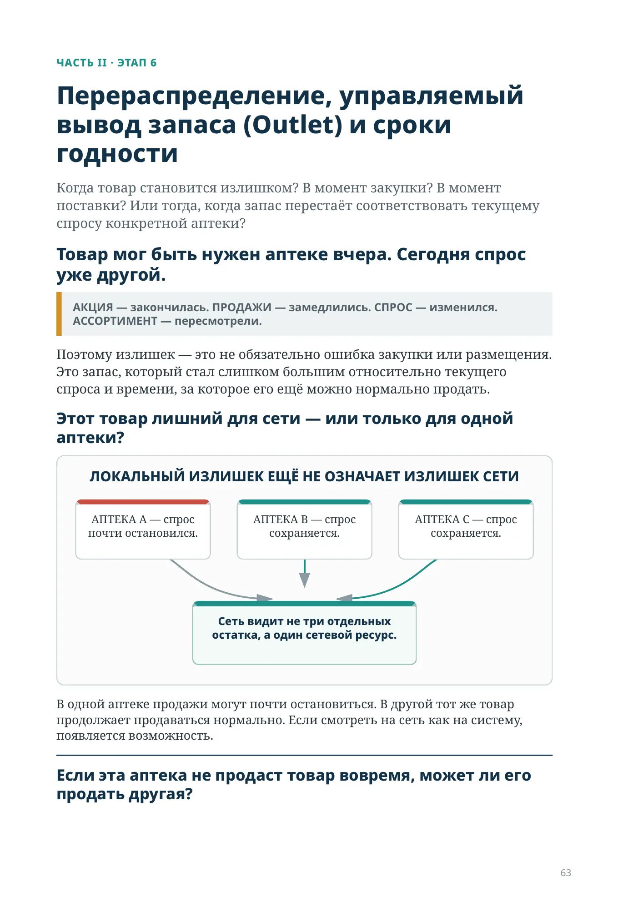
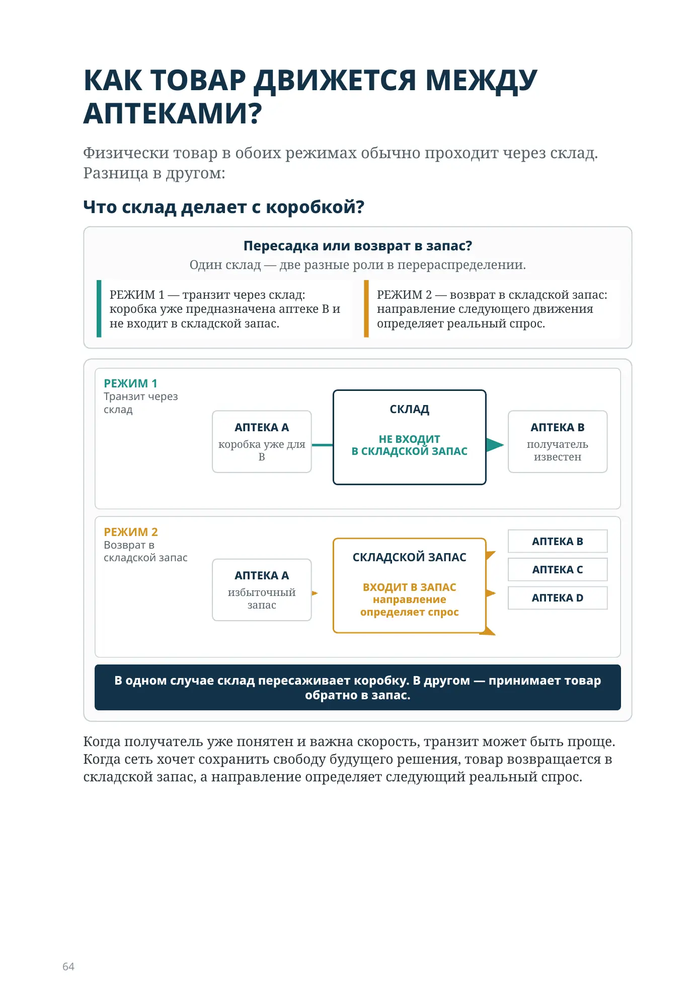
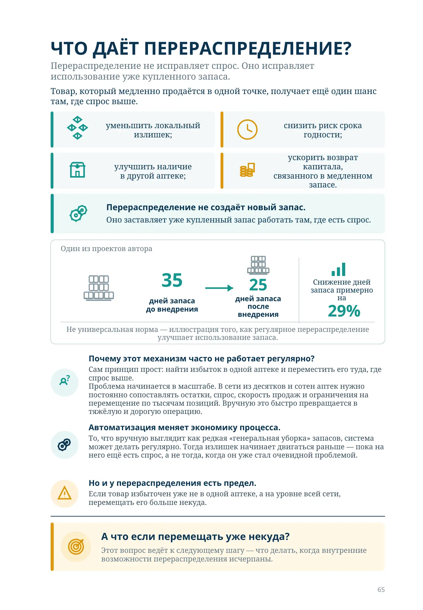
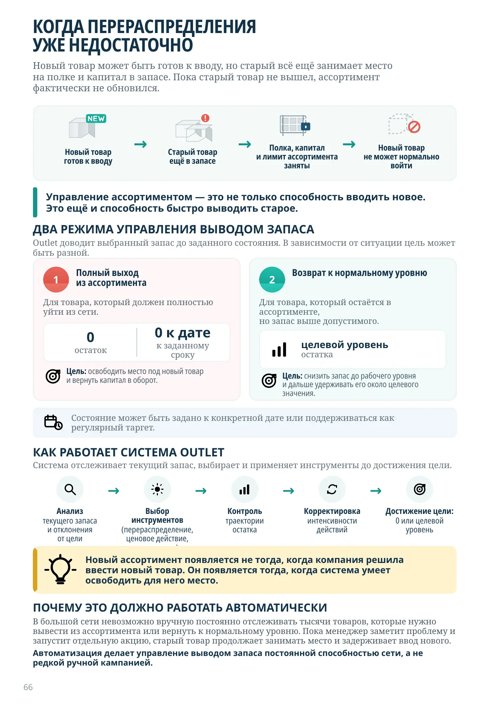
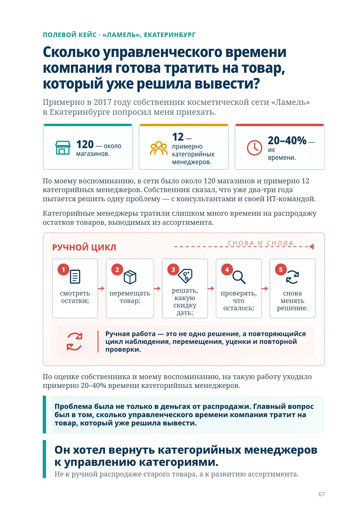
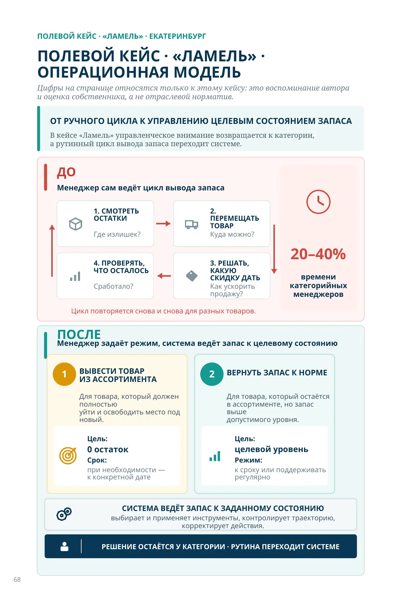
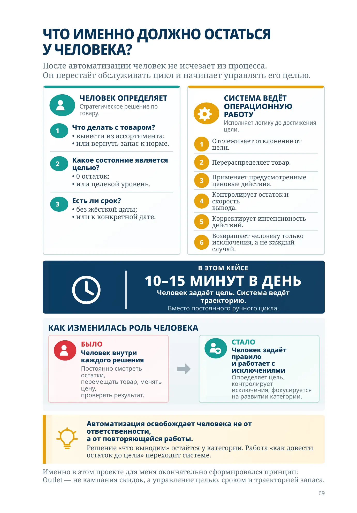
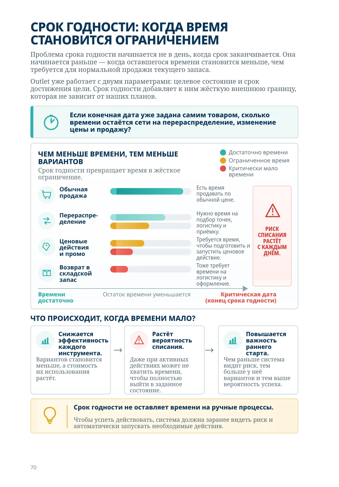
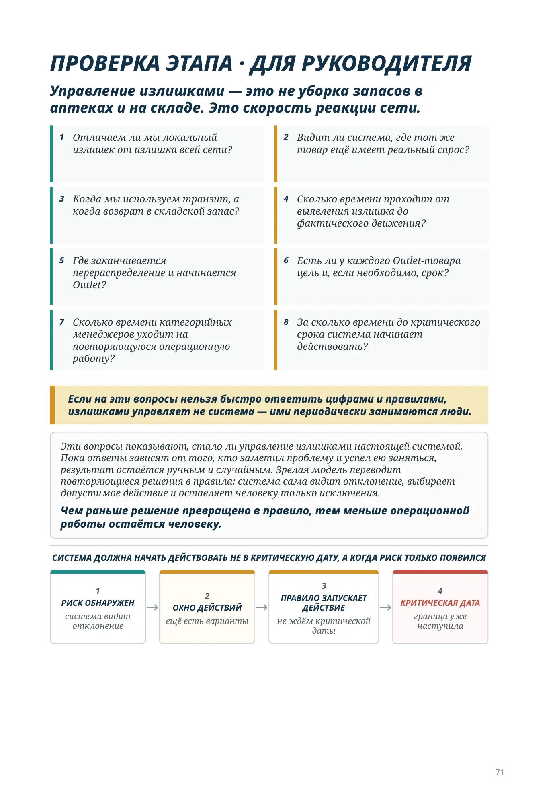
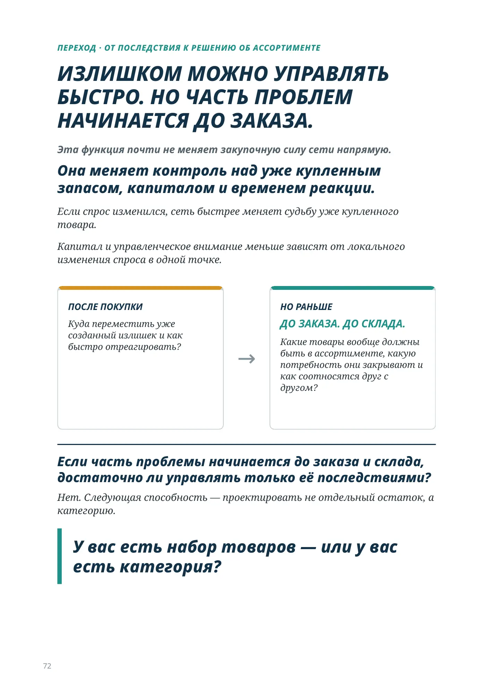
ЧАСТЬ II · ЭТАП 6
Когда товар становится излишком? В момент закупки? В момент поставки? Или тогда, когда запас перестаёт соответствовать текущему спросу конкретной аптеки?
АКЦИЯ — закончилась. ПРОДАЖИ — замедлились. СПРОС — изменился. АССОРТИМЕНТ — пересмотрели.
Поэтому излишек — это не обязательно ошибка закупки или размещения. Это запас, который стал слишком большим относительно текущего спроса и времени, за которое его ещё можно нормально продать.
АПТЕКА A — спрос почти остановился.
АПТЕКА B — спрос сохраняется.
АПТЕКА C — спрос сохраняется.
Сеть видит не три отдельных остатка, а один сетевой ресурс.
В одной аптеке продажи могут почти остановиться. В другой тот же товар продолжает продаваться нормально. Если смотреть на сеть как на систему, появляется возможность.
Физически товар в обоих режимах обычно проходит через склад. Разница в другом:
Пересадка или возврат в запас?
Один склад — две разные роли в перераспределении.
РЕЖИМ 1 — транзит через склад: коробка уже предназначена аптеке B и не входит в складской запас.
РЕЖИМ 2 — возврат в складской запас: направление следующего движения определяет реальный спрос.
Когда получатель уже понятен и важна скорость, транзит может быть проще. Когда сеть хочет сохранить свободу будущего решения, товар возвращается в складской запас, а направление определяет следующий реальный спрос.
Перераспределение не исправляет спрос. Оно исправляет использование уже купленного запаса.
Товар, который медленно продаётся в одной точке, получает ещё один шанс там, где спрос выше.
Один из проектов автора
дней запаса
до внедрения
после внедрения
Снижение дней запаса примерно на 29%
Не универсальная норма — иллюстрация того, как регулярное перераспределение
улучшает использование запаса.
Сам принцип прост: найти избыток в одной аптеке и переместить его туда, где спрос выше.
Проблема начинается в масштабе. В сети из десятков и сотен аптек нужно постоянно сопоставлять остатки, спрос, скорость продаж и ограничения на перемещение по тысячам позиций. Вручную это быстро превращается в тяжёлую и дорогую операцию.
То, что вручную выглядит как редкая «генеральная уборка» запасов, система может делать регулярно.
Тогда излишек начинает двигаться раньше — пока на него ещё есть спрос, а не тогда, когда он уже стал очевидной проблемой.
Если товар избыточен уже не в одной аптеке, а на уровне всей сети, перемещать его больше некуда.
Этот вопрос ведёт к следующему шагу — что делать, когда внутренние возможности перераспределения исчерпаны.
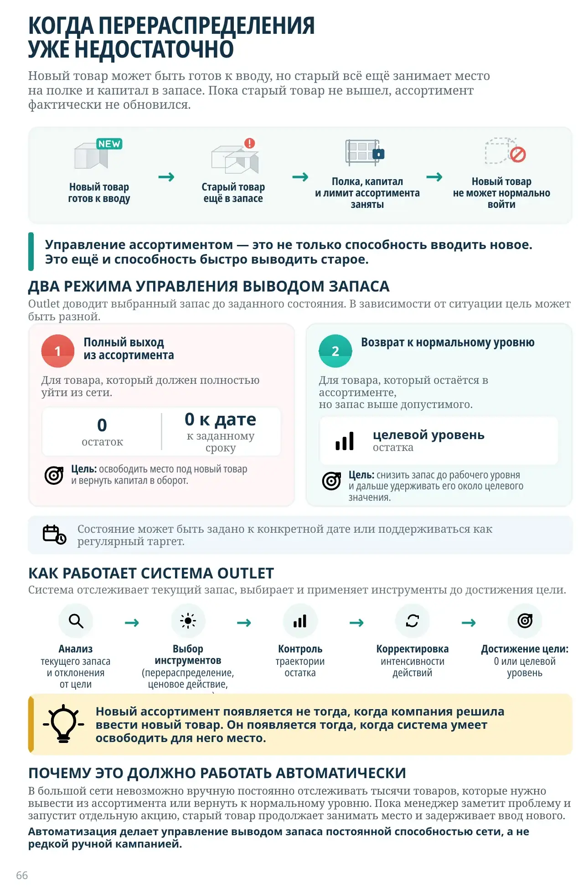
Новый товар может быть готов к вводу, но старый всё ещё занимает место на полке и капитал в запасе. Пока старый товар не вышел, ассортимент фактически не обновился.
Outlet доводит выбранный запас до заданного состояния. В зависимости от ситуации цель может быть разной.
Для товара, который должен полностью уйти из сети.
остаток
к заданному сроку
Цель: освободить место под новый товар и вернуть капитал в оборот.
Для товара, который остаётся в ассортименте, но запас выше допустимого.
остатка
Цель: снизить запас до рабочего уровня и дальше удерживать его около целевого значения.
Состояние может быть задано к конкретной дате или поддерживаться как регулярный таргет.
Система отслеживает текущий запас, выбирает и применяет инструменты до достижения цели.
Новый ассортимент появляется не тогда, когда компания решила ввести новый товар. Он появляется тогда, когда система умеет освободить для него место.
В большой сети невозможно вручную постоянно отслеживать тысячи товаров, которые нужно вывести из ассортимента или вернуть к нормальному уровню. Пока менеджер заметит проблему и запустит отдельную акцию, старый товар продолжает занимать место и задерживает ввод нового.
Автоматизация делает управление выводом запаса постоянной способностью сети, а не редкой ручной кампанией.
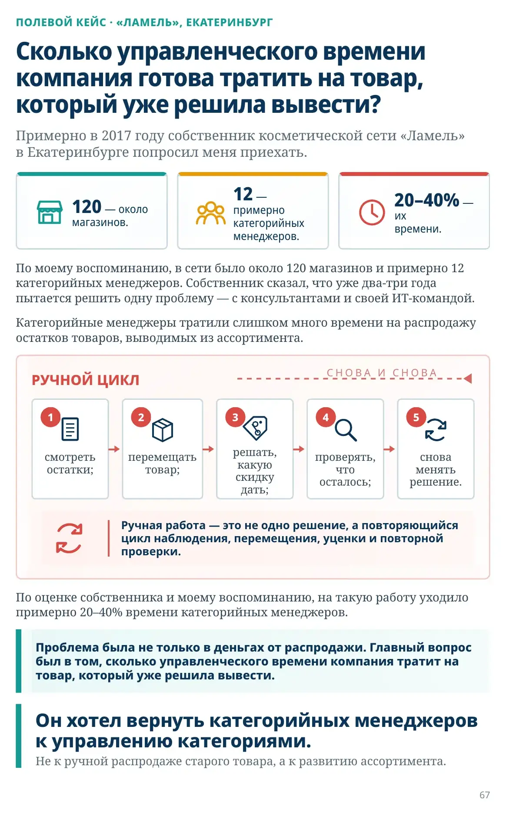
ПОЛЕВОЙ КЕЙС · «ЛАМЕЛЬ», ЕКАТЕРИНБУРГ
Примерно в 2017 году собственник косметической сети «Ламель» в Екатеринбурге попросил меня приехать.
120 — около магазинов.
12 — примерно категорийных менеджеров.
20–40% — их времени.
По моему воспоминанию, в сети было около 120 магазинов и примерно 12 категорийных менеджеров. Собственник сказал, что уже два-три года пытается решить одну проблему — с консультантами и своей ИТ-командой.
Категорийные менеджеры тратили слишком много времени на распродажу остатков товаров, выводимых из ассортимента.
Ручная работа — это не одно решение, а повторяющийся цикл наблюдения, перемещения, уценки и повторной проверки.
По оценке собственника и моему воспоминанию, на такую работу уходило примерно 20–40% времени категорийных менеджеров.
Проблема была не только в деньгах от распродажи. Главный вопрос был в том, сколько управленческого времени компания тратит на товар, который уже решила вывести.
Не к ручной распродаже старого товара, а к развитию ассортимента.
ПОЛЕВОЙ КЕЙС · «ЛАМЕЛЬ» · ЕКАТЕРИНБУРГ
Цифры на странице относятся только к этому кейсу: это воспоминание автора и оценка собственника, а не отраслевой норматив.
В кейсе «Ламель» управленческое внимание возвращается к категории, а рутинный цикл вывода запаса переходит системе.
Менеджер сам ведёт цикл вывода запаса
Где излишек?
Куда можно?
Как ускорить продажу?
Сработало?
20–40% времени категорийных менеджеров
Цикл повторяется снова и снова для разных товаров.
Менеджер задаёт режим, система ведёт запас к целевому состоянию
Для товара, который должен полностью уйти и освободить место под новый.
Цель: 0 остаток
Срок: при необходимости — к конкретной дате
Для товара, который остаётся в ассортименте, но запас выше допустимого уровня.
Цель: целевой уровень
Режим: к сроку или поддерживать регулярно
РЕШЕНИЕ ОСТАЁТСЯ У КАТЕГОРИИ · РУТИНА ПЕРЕХОДИТ СИСТЕМЕ
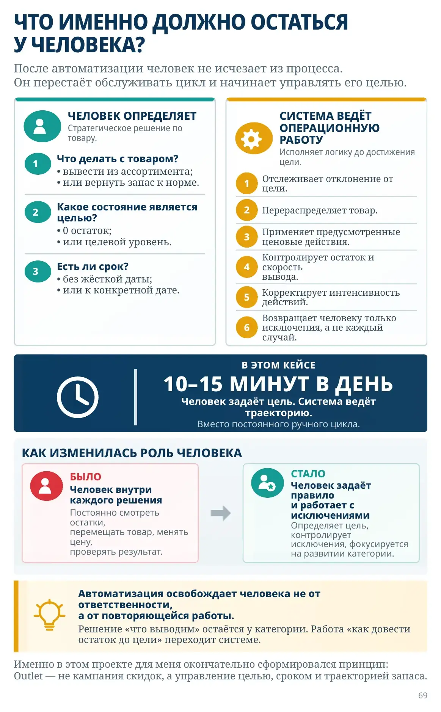
После автоматизации человек не исчезает из процесса. Он перестаёт обслуживать цикл и начинает управлять его целью.
Стратегическое решение по товару.
Исполняет логику до достижения цели.
В ЭТОМ КЕЙСЕ
10–15 МИНУТ В ДЕНЬ
Человек задаёт цель. Система ведёт траекторию.
Вместо постоянного ручного цикла.
Человек внутри каждого решения
Постоянно смотреть остатки, перемещать товар, менять цену, проверять результат.
Человек задаёт правило и работает с исключениями
Определяет цель, контролирует исключения, фокусируется на развитии категории.
Автоматизация освобождает человека не от ответственности, а от повторяющейся работы.
Именно в этом проекте для меня окончательно сформировался принцип: Outlet — не кампания скидок, а управление целью, сроком и траекторией запаса.
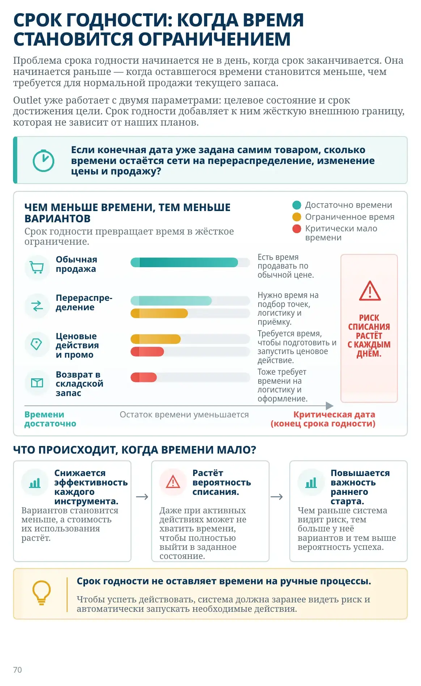
Проблема срока годности начинается не в день, когда срок заканчивается. Она начинается раньше — когда оставшегося времени становится меньше, чем требуется для нормальной продажи текущего запаса.
Outlet уже работает с двумя параметрами: целевое состояние и срок достижения цели. Срок годности добавляет к ним жёсткую внешнюю границу, которая не зависит от наших планов.
Срок годности превращает время в жёсткое ограничение.
Есть время продавать по обычной цене.
Нужно время на подбор точек, логистику и приёмку.
Требуется время, чтобы подготовить и запустить ценовое действие.
Тоже требует времени на логистику и оформление.
Вариантов становится меньше, а стоимость их использования растёт.
Даже при активных действиях может не хватить времени, чтобы полностью выйти в заданное состояние.
Чем раньше система видит риск, тем больше у неё вариантов и тем выше вероятность успеха.
Чтобы успеть действовать, система должна заранее видеть риск и автоматически запускать необходимые действия.
Если на эти вопросы нельзя быстро ответить цифрами и правилами, излишками управляет не система — ими периодически занимаются люди.
Эти вопросы показывают, стало ли управление излишками настоящей системой. Пока ответы зависят от того, кто заметил проблему и успел ею заняться, результат остаётся ручным и случайным. Зрелая модель переводит повторяющиеся решения в правила: система сама видит отклонение, выбирает допустимое действие и оставляет человеку только исключения.
ПЕРЕХОД · ОТ ПОСЛЕДСТВИЯ К РЕШЕНИЮ ОБ АССОРТИМЕНТЕ
Если спрос изменился, сеть быстрее меняет судьбу уже купленного товара.
Капитал и управленческое внимание меньше зависят от локального изменения спроса в одной точке.
Куда переместить уже созданный излишек и как быстро отреагировать?
Какие товары вообще должны быть в ассортименте, какую потребность они закрывают и как соотносятся друг с другом?
Нет. Следующая способность — проектировать не отдельный остаток, а категорию.